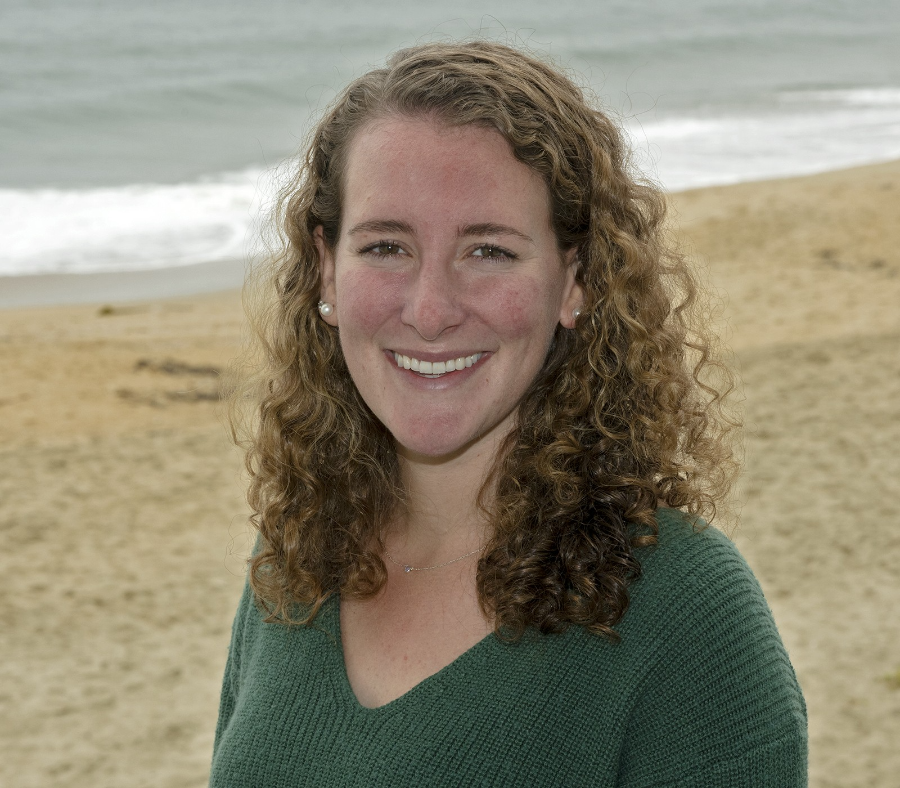

Seminar: From sequences to satellites: Decoding phytoplankton biodiversity in the global ocean
Event dates
- Eastern
Registration
Register for Zoom MeetingEvent details
Please join us on Monday, November 23 at 4pm ET for our next Imageomics Seminar, From sequences to satellites: Decoding phytoplankton biodiversity in the global ocean with Dr. Sasha Kramer, Assistant Professor in the Department of Earth and Environment at Boston University.
Abstract: Characterizing phytoplankton diversity across spatiotemporal scales is essential for a complete understanding of various Earth system processes, from biogeochemical cycling to carbon sequestration. Understanding the distribution of different phytoplankton groups in time and space is particularly relevant in a changing ocean. Despite the urgency and importance of resolving phytoplankton community composition, current observations of the global ocean fail to capture phytoplankton composition at high taxonomic resolution and on scales relevant to the broader Earth system. To address this fundamental challenge, my work merges ocean color remote sensing measurements with in-water molecular, optical, and flow cytometry data to enable accurate observations of phytoplankton on global to regional scales, across depths, and at high temporal resolution. In this talk, I will describe my work to explore global phytoplankton community composition across methods, including the development of a novel remote sensing models that are currently being implemented for NASA’s new Plankton Aerosol Cloud and ocean Ecosystem (PACE) satellite. By combining methods and scales of inquiry, I will demonstrate how predictive relationships can be built between ocean color and surface ocean phytoplankton taxa.

Speaker bio: Sasha is currently an Assistant Professor of Global Change Remote Sensing in the Department of Earth & Environment at Boston University. Previously, she was a Simons Foundation Postdoctoral Fellow in Marine Microbial Ecology at the Monterey Bay Aquarium Research Institute. Sasha received her Ph.D. in Marine Science from UC Santa Barbara in 2022 and her B.A. in Earth & Oceanographic Science and Environmental Studies from Bowdoin College in Maine. While she spends a lot of time on her computer, her favorite part of being a marine scientist is being at sea!